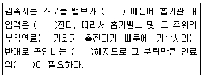
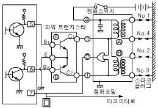
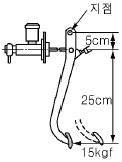
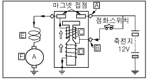
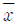
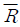

자동차정비기능장 (2009-07-12 기출문제)
1과목: 임의구분
1. 내경 80mm, 행정 100mm 2행정 사이클 2실린더 기관이 3200rpm으로 회전할 때 축에 발생하는 회전력은? (단, 지시평균 유효압력은 6.5kg/cm2, 기계효율 ηm은 90%이다.)
- 약 9.94kgfㆍm
- 약 9.55kgfㆍm
- 약 9.36kgfㆍm
- 약 8.95kgfㆍm
(정답률: 55%)

2. 지름이 100mmm, 행정이 95mm인 가솔린 기관에서 압축비가 13 : 1일 때 연소실 체적은?
- 약 58cc
- 약 62cc
- 약 67cc
- 약 86cc
(정답률: 35%)
3. 다음은 전자제어 기관에 대한 설명이다. ( )안에 들어갈 내용으로 맞는 것은?

- 열리기, 낮아, 농후, 감량
- 열리기, 높아, 희박, 증량
- 닫히기, 낮아, 농후, 감량
- 닫히기, 높아, 희박, 증량
(정답률: 93%)
4. 자동차 기관에서 가솔린 200cc를 완전연소 시키는 데 필요한 공기는? (단, 가솔린 비중은 0.73이고, 혼합비는 15 : 1이다.)
- 1.46kgf
- 1.86kgf
- 2.19kgf
- 3.04kgf
(정답률: 53%)
5. 터보차저 시스템에서 엔진을 급가속하면 배출가스량이 증가되고 이 배출가스의 증가는 다시 흡입공기량을 증가시키는 현상이 반복되므로 가관출력이 과도하게 상승되어 통제가 어려운 상황에 이를 수도 있게 된다. 따라서 배출가스의 양을 통제하는 기능이 필요하여 밸브를 설치하는데 이 밸브를 무엇이라고 하는가?
- 서모 밸브
- 터보 밸브
- 캐니스터 밸브
- 웨이스트게이트 밸브
(정답률: 87%)
6. 오일펌프에서 압송한 오일 전부를 오일 여과기에 여과한 다음 각 부분으로 공급하는 오일순환 방식은?
- 전류식
- 분류식
- 일체식
- 복합식
(정답률: 85%)
7. 전자제어 가솔린기관에서 공연비 피드백(Feed-Back)제어에 대한 설명으로 틀린 것은?
- 산소센서의 출력 신호를 이용한다.
- 산소센서(지르코니아 방식)의 출력전압이 낮으면 연료 분사량을 감량시킨다.
- 배기가스의 정화능력이 향상되도록 이론공연비를 유지한다.
- 연료 분사량을 중량 또는 감량시킨다.
(정답률: 72%)
8. 그림과 같은 동시 점화방식 회로에서 ECU의 5, 6번 단자에서 파워 트랜지스터로 연결된 단자에 계속해서 전원이 인가된다면 어떤 현상이 발생하는지 바르게 설명한 것은?

- 점화코일에는 항상 고전압이 발생된다.
- 1, 4번 실린더에만 고압이 발생된다.
- 점화코일에 고압이 발생하지 않는다.
- 2, 3번 실린더에만 고압이 발생된다.
(정답률: 62%)
9. 라디에이터 압력캡의 진공밸브가 열리는 시점으로 옳은 것은?
- 라디에이터 내의 압력이 대기압보다 높을 때
- 라디에이터 내의 압력이 대기압보다 낮을 때
- 라디에이터 내의 압력이 규정치보다 높을 때
- 보조탱크 내의 압력이 규정보다 낮을 때
(정답률: 75%)
10. 기관의 배기가스 중 HC를 감소시키는 요인으로 틀린 것은?
- 점화전압 증가
- 희박 연소
- 실린더 벽면의 온도 상승
- 압축비의 감소
(정답률: 48%)
11. LPG 엔진의 연료장치에서 액상 또는 기상의 연료를 선택하여 공급하기 위해서는 어떤 신호를 받아야 하는가?
- 엔진 회전수
- 냉각수 온도
- 흡입 공기 온도
- 흡입 공기량
(정답률: 78%)
12. 디젤기관에 사용되는 분사펌프에서 플런저에 관계되는 설명 중 틀린 것은?
- 보통의 플런저 스프링은 분사펌프의 회전속도가 2000rpm정도에서 서어징 현상이 발생되므로 스프링 정수가 큰 스프링을 사용한다.
- 고속 태핏은 조정 스크루를 두지 않으므로 태핏간극은 태핏과 아래 스프링 시트 사이에 시임을 넣어 조정한다.
- 플런저의 유효행정이 길어지면 분사량이 감소하고 짧을수록 분사량이 증대된다.
- 정리드 플런저는 분사펌프의 캠축에 대해 연료의 송출기간이 시작은 일정하고 종결이 변화된다.
(정답률: 66%)
13. 디젤기관의 와류실식 연소실을 직접분사실식과 비교할 때의 장점이 아닌 것은?
- 실린더 헤드의 구조가 간단하다.
- 압축행정에서 생기는 강한 와류를 이용하기 때문에 회전속도 및 평균유효 압력을 높일 수 있다.
- 분사 압력이 낮아도 된다.
- 기관의 사용회전속도 범위가 넓고 운전이 원활하다.
(정답률: 76%)
14. 크랭크축 베어링과 저널 간극의 측정에 쓰이는 게이지로 가장 적합한 것은?
- 필러 게이지
- 다이얼 게이지
- 플라스틱 게이지
- V 블록
(정답률: 86%)
15. 전자제어 가솔린기관의 리턴방식에서 연료 압력조절기는 무엇과 연계하여 연료압력을 조절하는가?
- 압축압력
- 흡기다기관 압력
- 점화시기
- 냉각수 온도
(정답률: 86%)
16. 가솔린 분사장치의 공기량 계측방식에서 칼만와류식은 어느 계측방식에 속하는가?
- 기계식 체적 유량 계측 방식
- 베인식 질량 유량 계측 방식
- 초음파식 체적 유량 계측 방식
- 열선식 질량 유량 계측 방식
(정답률: 76%)
17. LPG 기관의 장점에 대한 설명으로 적합한 것은?
- 연료 가격이 가솔린에 비해 저렴하지만 유해 배기가스의 배출이 많다.
- 연소가 균일하지 못하고 소음이 많이 발생한다.
- 가스 저장용기로 인하여 차량 중량이 증가한다.
- LPG의 옥탄가가 가솔린보다 높다.
(정답률: 80%)
18. 내연기관의 기본 사이클 중 압축비가 일정하다고 가정할 경우 열효율을 비교한 것 중 옳은 것은?
- 열효율은 정적(otto) 사이클이 가장 좋다.
- 열효율은 정압(diesel) 사이클이 가장 좋다.
- 열효율은 합성(sabathe) 사이클이 가장 좋다.
- 압축비가 같으므로 열효율도 같다.
(정답률: 63%)
19. 그림과 같은 브레이크 장치가 있다. 피스톤의 면적이 3cm2 일 때 푸시로드에 가해주는 힘(kgf)과 유압(kgf/cm2)은?

- 푸시로드에 45kgf힘, 유압은 45kgf/cm2
- 푸시로드에 70kgf 힘, 유압은 45kgf/cm2
- 푸시로드에 90kgf 힘, 유압은 30kgf/cm2
- 푸시로드에 1⑤kgf 힘, 유압은 30kgf/cm2
(정답률: 70%)
20. 축거가 2.5m 인 자동차 주행 중 선회시 바깥바퀴의 조향각이 30°. 안쪽바퀴의 조향각이 35°이다. 최소회전반경은? (단, 킹핀 중심과 바퀴의 접지면 중심간 거리는 15cm이다)
- 4.36m
- 4.51m
- 5.01m
- 5.15m
(정답률: 30%)
2과목: 임의구분
21. 압축 공기식 디스크 브레이크 장치 장착 차량에서 브레이크가 과열되는 원인은?
- 압축공기 누설
- 브레이크 캘리퍼 피스톤의 고착
- 브레이크 디스크 두께 변화
- 브레이크 체임버 리턴 스프링의 장력 약화
(정답률: 62%)
22. 자동변속기의 킥 다운에 대한 설명으로 잘못된 것은?
- 주행 중의 급가속을 위해 둔다.
- 스로틀 밸브를 급격히 전개 상태에 가깝게 밟을 때 작동한다.
- 주행중인 변속단에서 1∼2단을 낮춘다.
- 모든 조건에서 1단씩 낮춘다.
(정답률: 58%)
23. 타이어에 작용하는 힘을 제어하여 엔진 토크를 항상 타이어 슬립 한계 내에 두도록 하는 것은?
- 4WD(4 Wheel Drive)
- ECS(Electric Control Suspension)
- ABS(Anti-lock Brake System)
- TCS(traction Control System)
(정답률: 75%)
24. ABS 장치에서 제어 채널의 종류에 속하지 않는 것은?
- 4센서 3채널
- 4센서 4채널
- 4센서 1채널
- 4센서 2채널
(정답률: 80%)
25. 전자제어 조향장치(EPS)에 대한 설명으로 적합하지 않은 것은?
- 전자제어 조향장치(EPS)에는 차속센서, 솔레노이드가 사용된다.
- 전자제어식 EPS는 차속센서의 고장시 조향력을 유지하기 위한 신호로 스로틀 위치센서(TPS)가 이용되기도 한다.
- 차속감응식의 경우 저속에서는 가볍게, 고속에서는 무겁게 조향할 수 있는 특성이 있다.
- 전동전자제어식에서는 속도에 따라 솔레노이드 밸브에 흐르는 전압을 듀티비로 제어한다.
(정답률: 72%)
26. 차량 주행 중 ABS 작동조건에 해당되지 않았음에도 불구하고 ABS 작동 진동(맥동)이 발생되었을 때 예상할 수 있는 고장원인으로 가장 적합한 것은?
- 제동등 스위치 커넥터 접촉 불량
- 하이드롤릭 유닛 내부 밸브 릴레이 불량
- 휠 스피드 센서 에어 갭 불량
- 차속센서(Vehicle Speed Sensor) 불량
(정답률: 73%)
27. 전자제어 현가장치에서 제어 항목이 아닌 것은?
- 안티 롤 제어
- 안티 다이브 제어
- 안티 피칭, 바운싱 제어
- 안티 토크 제어
(정답률: 80%)
28. 수동변속기의 오작동 방지 기구에 대한 필요성과 작동 설명 중 틀린 것은?
- 시프트 레일에 각 기어를 고정시키기 위한 홈을 두고 이 홈에는 기어가 빠지는 것을 방지하기 위해 로킹 볼(locking ball)과 스프링이 설치되어 있다.
- 클러치 슬리브나 슬라이딩 기어의 이동거리는 정확하게 정해져 있으며, 인터록(inter lock)에 의해 제한된다.
- 후진으로 변속할 때 기어가 파손되는 것을 방지하기 위해 변속레버를 누르거나 들어올려야만 변속되게 하는 후진 오조작 방지 기구가 있다.
- 하나의 기어가 물려 있을 때 다른 기어는 중립에서 이동하지 못하도록 하여 기어의 이중 물림을 방지하는 장치를 인터록(inter lock)이라 한다.
(정답률: 73%)
29. 중량 1500kgf 의 자동차가 출발하여 90km/h 의 속도까지 가속하는데 20초 걸렸다면 이 자동차의 가속 저항은? (단, 회전부분 상당 중량은 무시)
- 75kgf
- 90kgf
- 153.1kgf
- 191.3kgf
(정답률: 37%)
30. 유압 배력장치 중 마스터 백에 대한 설명 중 맞지 않는 것은?
- 마스터 백에는 파워 실린더와 파워 피스톤이 있다.
- 제동시에는 브레이크 조절 밸브에 의해 페달의 답력에 따라 제어된 유압을 휠 실린더로 보낸다.
- 압축기에 의해 가압된 압축 공기를 작동 매체로 한다.
- 브레이크를 작동시키지 않을 때 대기 밸브는 닫히고 진공 밸브는 열려 있어 실린더 양쪽실은 진공상태이다.
(정답률: 59%)
31. 자동변속기 오일의 색깔이 흑색일 경우 예측되는 고장 원인은?
- O-링의 열화 및 클러치 디스크의 마모
- 불완전 연소에 의한 카본 분말
- 연료 및 냉각수 혼입
- 농후한 혼합기 공급
(정답률: 95%)
32. 자동차의 진동에 관한 설명 중 수직축(Z축)을 중심으로 차체가 좌우로 회전하는 진동을 무엇이라고 하는가?
- 러칭(lurching)
- 피칭(pitching)
- 요잉(yawing)
- 바운싱(bouncing)
(정답률: 74%)
33. 사이드 슬립 측정기로 미끄럼량을 측정한 결과 왼쪽 바퀴는 안(in) 7mm, 오른쪽 바퀴는 바깥(out) 3mm를 표시하였다. 이 경우 미끄럼량은?
- 10(in)mm
- 5(in)mm
- 2(out)mm
- 2(in)mm
(정답률: 84%)
34. 토크 컨버터의 성능곡선에서 토크비가 1：1이 되는 점은?
- 클러치점
- 변속점
- 슬립점
- 토크점
(정답률: 75%)
35. 사이드 슬립(side slip)에 대한 설명으로 틀린 것은?
- 사이드 슬립의 주요 원인은 토인(toe in)과 캠버(camber)이다.
- 사이드 슬립량은 타이로드(tie rod)의 길이로 조정한다.
- 타이로드가 차축 중심의 뒷부분에 있으면 길이를 줄일수록 토인(toe in)이 된다.
- 직진시 캠버각이 크면 타이어는 옆 미끄럼을 일으키고 마모의 원인이 된다.
(정답률: 77%)
36. 타이어 공기압 부족시 나타나는 현상이 아닌 것은?
- 타이어 바깥쪽이 과다하게 마모될 수 있다.
- 브레이크를 밟았을 때 미끄러지기 쉽다.
- 코드의 절단 및 타이어가 파열될 수 있다.
- 타이어 수명이 단축된다.
(정답률: 68%)
37. 자동 차동제한장치에 대한 설명 중 틀린 것은?
- 수렁 탈출에 용이하다.
- 요철 노면 주행시 피시테일(fish tail) 운동이 발생한다.
- 커브시의 바퀴 공진을 방지할 수 있다.
- 발진시 바퀴 공진을 방지할 수 있다.
(정답률: 78%)
38. 점화 지연시간이 1/800초인 연료를 사용하여 최고폭발 압력을 ATDC 5° 에서 발생시키기 위해 TDC 몇도 전방에서 점화를 해야 하는가? (단, 기관은 2500rpm이다.)
- 13.7°
- 17.9°
- 18.7°
- 21.7°
(정답률: 40%)
39. 축전지의 설페이션 현상의 원인으로 가장 적합한 것은?
- 충전 전류가 크다.
- 충전 전압이 높다.
- 전해액의 양이 부족하다.
- 전해액의 온도가 낮다.
(정답률: 70%)
40. 자기식의 계기 중에서 영구자석의 회전으로 전자유도 작용에 의하여 로터에 발생된 맴돌이 전류와 영구자석의 상호작용에 의해 작동되는 계기는?
- 수온계
- 전류계
- 유압계
- 속도계
(정답률: 59%)
3과목: 임의구분
41. 다음 그림에서 기동 전동기의 구성품 설명으로 틀린 것은?

- “C"는 풀링(pull in) 코일이다.
- “D"는 홀드인(hold in) 코일이다.
- “E"는 리턴 스프링이다.
- “F"는 전기자(armature)이다.
(정답률: 84%)
42. AC 발전기의 출력단자(B)에서 전선을 떼어낸 상태에서 엔진을 시동해서는 안되는 이유는?
- 축전지가 과충전된다.
- 전구가 끊어진다.
- 다이오드가 손상된다.
- 스테이터 코일이 파손된다.
(정답률: 74%)
43. 전자제어 현가장치(ECS)에서 앤티 다이브(Anti Dive) 제어가 실행되기 위한 조건이 아닌 것은?
- 차량속도는 약 40km/h 이상이어야 한다.
- 제동스위치의 작동신호가 입력되어야 한다.
- 자동변속기는 오버 드라이브 상태가 아니어야 한다.
- ECS 컨트롤 유닛 자체의 결함은 없어야 한다.
(정답률: 66%)
44. 응축기 냉각핀이 막혀 공기 흐름이 막혔을 경우 저 ㆍ고압측 압력변화가 정상일 때와 비교해서 맞는 것은?
- 저압측 압력이 떨어진다.
- 저압측 압력은 상승되고 고압측은 떨어진다.
- 저ㆍ고압측 모두 압력이 상승된다.
- 저ㆍ고압측 모두 압력이 떨어진다.
(정답률: 78%)
45. 배터리 및 발전기에 대한 설명 중 틀린 것은?
- 기관 정지시에는 배터리가 전기장치의 전원으로 사용된다.
- 기관 정지시에는 배터리가 시동모터와 점화코일에 전원을 공급한다.
- 차량 전기 사용량이 발전기의 전원 공급량보다 많을 때는 배터리에서도 공급한다.
- 기관 시동시 예열장치의 전원 공급은 발전기이다.
(정답률: 89%)
46. 트랜지스터의 3단자가 아닌 것은?
- 이미터
- 컬렉터
- 베이스
- 게이트
(정답률: 83%)
47. 다음 중 자동차의 보디에 해당되지 않는 것은?
- 도어
- 펜더
- 루프
- 섀시
(정답률: 71%)
48. 전기 스포트 용접 과정에 속하지 않는 것은?
- 가압밀착시간
- 통전융합시간
- 냉각고착시간
- 전극접속시간
(정답률: 56%)
49. 조색시 색을 비교할 때의 조건으로 가장 거리가 먼것은?
- 30cm 떨어진 곳에서 한다.
- 계속해서 응시하는 것이 좋다.
- 가끔 다른 색을 보게 한다.
- 광원을 바꾸어 색상을 비교한다.
(정답률: 73%)
50. 안료에 대한 설명 중 옳지 않은 것은?
- 물, 기름, 용제 등에 용해되지 않는 분말이다.
- 안료는 조성에 따라 무기안료, 유기안료로 구분한다.
- 안료는 도막을 유색 투명하게 하고 피막을 생성한다.
- 화학적으로 안전해야 하며, 일광이나 대기 작용에 대하여 강해야 한다.
(정답률: 65%)
51. 도장 면에 좋은 평활성을 얻으려면 어떠한 방법으로 연마하여야 하는가?
- 전ㆍ후로만 실시한다.
- 전ㆍ후로 번갈아 실시한다.
- 전ㆍ후ㆍ좌ㆍ우로 겹쳐 실시한다.
- 처음 실시한 방향으로만 실시한다.
(정답률: 80%)
52. 센터링 게이지로 차체 변형을 판독할 수 없는 변형은?
- 새그
- 쇼트 레일
- 트위스트
- 사이드 웨이
(정답률: 45%)
53. 도료를 도장했을 때 금속분이 균일하게 배열되지 않고 부분적으로 뭉쳐 얼룩져 보이는 현상이 메탈릭 얼룩이다. 방지 대책으로 틀린 것은?
- 에어압을 높게 한다.
- 토출량을 작게 한다.
- 점도를 높게 한다.
- 운행속도를 느리게 한다.
(정답률: 51%)
54. 인장방향의 재료에 압축방향의 변형이 이루어지도록 힘을 가하면 탄성한계는 처음보다 낮아지게 되는 것은?
- 이방성
- 바우싱거 효과
- 가공경화
- 재결정
(정답률: 58%)
55. 200개 들이 상자가 15개 있다. 각 상자로부터 제품을 랜덤하게 10개씩 샘플링할 경우 이러한 샘플링 방법을 무엇이라 하는가?
- 계통 샘플링
- 취락 샘플링
- 층별 샘플링
- 2단계 샘플링
(정답률: 57%)
56.

관리도에서 관리상한이 22.15, 관리하한이 6.85,
=7.5일 때 시료군의 크기(n)는 얼마인가? (단, n=2일 때 A2=1.88, n=3일 때 A2=1.02, n=4일 때 A2=0.73, n=5일 때 A2=0.58이다.)- 2
- 3
- 4
- 5
(정답률: 37%)
57. 다음 중 사내표준을 작성할 때 갖추어야 할 조건으로 옳지 않은 것은?
- 내용이 구체적이고 주관적일 것.
- 장기적 방침 및 체계 하에서 추진할 것.
- 작업표준에는 수단 및 행동을 직접 제시할 것.
- 당사자에게 의견을 말하는 기회를 부여하는 절차로 정할 것.
(정답률: 61%)
58. 어떤 측정법으로 동일 시료를 무한횟수 측정하였을 때 데이터 분포의 모집단 참값과의 차를 무엇이라 하는가?
- 편차
- 신뢰성
- 정확성
- 정밀도
(정답률: 67%)
59. ASME(American Society of Mechanical Engineers)에서 정의하고 있는 제품공정 분석표에 사용되는 기호 중 “저장(Storage)" 표현한 것은?
- ◯
- D
- □
- ∇
(정답률: 80%)
60. 다음 중 신제품에 대한 수요예측방법으로 가장 적절한 것은?
- 시장조사법
- 이동평균법
- 지수평활법
- 최소자승법
(정답률: 77%)
회전력 = (π/30) x 지름 x 행정 x 지시평균 유효압력 x 실린더 수 x 기계효율
여기서, 지름은 내경을 의미합니다.
따라서, 계산식에 값을 대입하면 다음과 같습니다.
회전력 = (π/30) x 80mm x 100mm x 6.5kg/cm2 x 2 x 0.9
= 9.36kgfㆍm
따라서, 정답은 "약 9.36kgfㆍm"입니다.